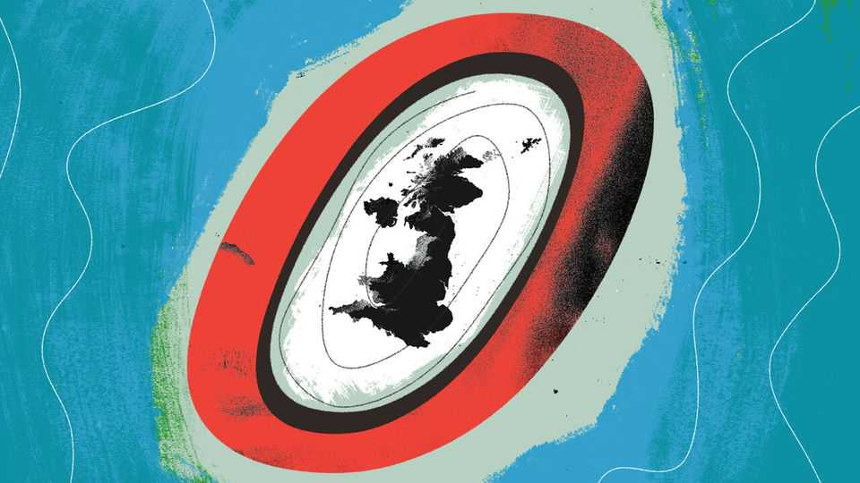

Is Britain ready for net-zero migration?
Getting what you want isn’t all it’s cracked up to be

Nov 12th 2026
When Nigel Farage returned to politics, during the 2024 general election, he made a wild suggestion. “Net migration should be zero,” said the leader of the populist-right Reform UK. Given that it had reached an all-time high of 944,000 the year before, it felt a preposterous goal.
Barely two years on, this wild suggestion may become reality. Migration has plummeted. When, later this month, the Office for National Statistics publishes net-immigration figures for the 12 months to June, they may reach a three-decade low (excluding the lockdown years). The number for the calendar year of 2026 could be negative, says James Bowes of Warwick University, forecasting that 54,000 more people will leave than arrive. Britain would become a country of net emigration for the first time since 1993.
Mr Farage was not alone in his broad goal. Every government since 2010 was elected on a pledge to cut immigration. David Cameron, as prime minister, wanted to reduce the net figure to “tens of thousands”. So did his successor, Theresa May. Boris Johnson, the prime minister behind Britain’s immigration spike, said numbers “will come down”. Rishi Sunak promised a cut. Even Sir Keir Starmer, a former Labour leader, said: “Read my lips: I will bring immigration…down.” People are used to being failed by their political class. What happens if they get what they want?
In some ways it is heartening. Britain’s political class is racked with learned helplessness. Cabinet ministers complain that the “levers of power” are not connected to anything. Migration figures say otherwise. The government pulled one lever and made it easier for people to move to Britain. Millions did. The government decided this was too much, pulled another lever and numbers fell steeply. True, they bodged it both ways: Mr Johnson did not expect millions to come; Mr Sunak’s changes were not meant to cut net migration to near-zero. Governing is hard. But it is possible.
Any politician expecting a thank-you is in for disappointment. Some parts of the debate will stay the same. When headline numbers shrink, others seem bigger. Small-boat crossings may be falling, yet they will account for a heftier chunk of net arrivals. Progressives once huffed that they were only a “tiny proportion” of overall migration. That particular argument has run its course. A world of “net-zero migration” is one in which the face of immigration is, more than ever, a man in a dinghy.
Other aspects of the immigration debate have already shifted, with concern about the flow turning to concern about the stock. Britain has undergone a sweeping demographic change. In 2004, when it opened its doors to migrants from eastern Europe, about one in ten people in Britain were foreign-born. Now, the number is one in five. Between 2021 and 2024 alone the number of foreign nationals rose by about 2m people, points out the Migration Observatory. Shabana Mahmood, the home secretary (and also the first to say “Boriswave” at the dispatch box), has made it difficult for recent arrivals to make their stay permanent.
And so a migration debate about stopping people coming turns into one about kicking people out. Reform has promised mass deportations; Mr Farage erected a mock airport-departure board for one press conference. Others go further: “Millions. Must. Go” is the slogan of Restore Britain, a far-right party. A lesson learned by Lord Cameron and Baroness May is now being learned by Mr Farage. Someone, somewhere is always harder.
Enormous numbers shifted the debate, with concern about immigration shooting up after the ons confirmed quite how big the recent influx had been. Will tiny ones—or negative ones—have the opposite effect? While opinion barely budged among Leave voters for whom immigration is an existential topic, liberal opinion moved sharply when arrivals exceeded one million. A majority of Remainers, Labour voters and even Liberal Democrats now think immigration has been too high for the past decade.
Maybe the bill coming due will change their minds. The government’s short-term fiscal projections see the economy as a simple machine: immigrants are poured in at one end and gdp comes out the other. Some economists worry the recent glut of often low-earning immigrants will be bad for the public finances over the long term. But for now immigration still determines how much the chancellor can spend. Voters are not really prepared to make sacrifices for lower migration, says Christabel Cooper of ThinkLabour, a Labour-friendly think-tank. They may have to.
With a long-frozen immigration debate going into flux, Britain’s progressives will shape it as much as conservatives. Once-verboten ideas are already being aired. Andy Burnham, the prime minister, is teasing the prospect of a return to freedom of movement between Britain and the EU, which some still see as political poison. At the same time, Ms Mahmood is trying to stem a tide that is already turning. “We look at the present through a rear-view mirror. We march backwards into the future,” said Marshall McLuhan, a media theorist. The lesson applies as much to migration policy as to the new tech he was talking about.
Perhaps even older neuroses can emerge anew. A country being flooded is one thing; a country being drained is another. For much of the 20th century, emigration was the public-policy ill of its age. “Stay here and fight it out,” declared Winston Churchill in a bbc address shortly after the second world war, imploring people to stay in Britain rather than escaping to Australia or Canada. Britons may re-learn the lesson that a country people want to come to is better than one people want to leave. In short, there is always something else to worry about. After nearly two decades of trying, the British state has delivered what voters have long said they wanted. No one will be happy about it. ■